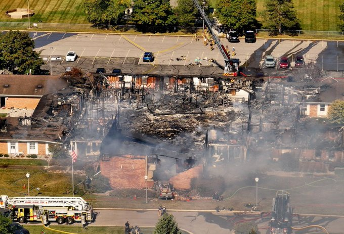

BREAKING NEWS
Active Shooter Opens Fire at Grand Blanc, MI Church – Building Engulfed in Flames
Grand Blanc, Michigan • Published: Setpember 29, 2025

At least one person is dead and more than 10 others injured after an active shooter opened fire at the Church of Jesus Christ of Latter-day Saints on McCandlish Road in Grand Blanc, Michigan. The suspect—a 40-year-old male—drove a truck into the church entrance, opened fire with an assault rifle, and set the building ablaze.
Police responded within minutes and shot and killed the gunman at the scene. Authorities confirm the shooter is deceased and no longer a threat.
According to officials at a press conference, hundreds of people were inside the church when the attack began. Rescue crews are still searching the burning structure, and police expect to find additional victims.